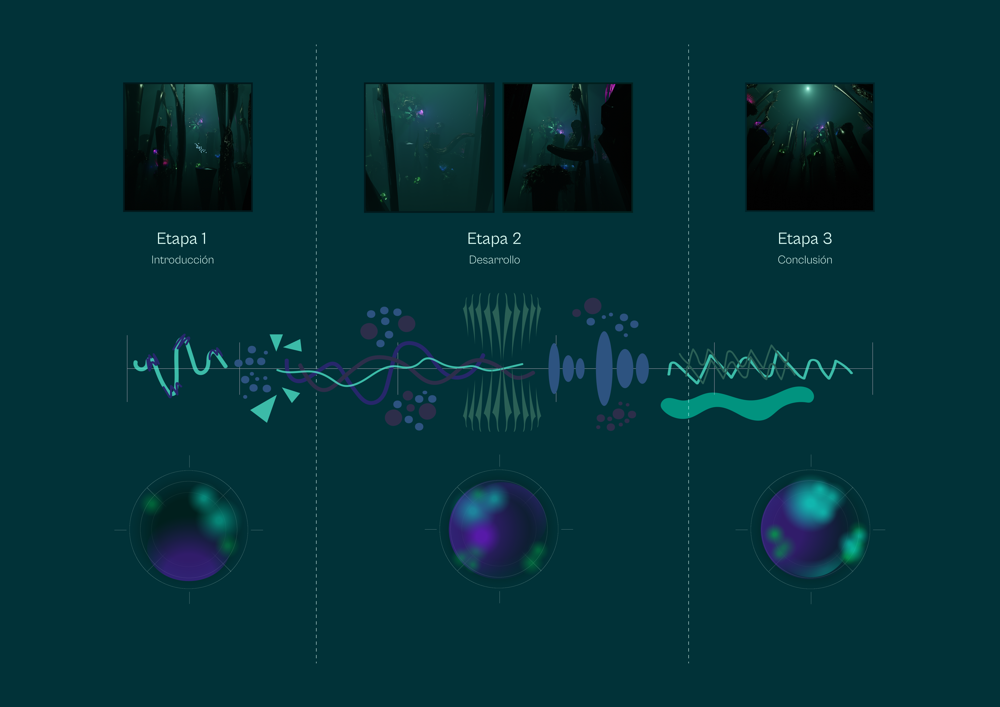
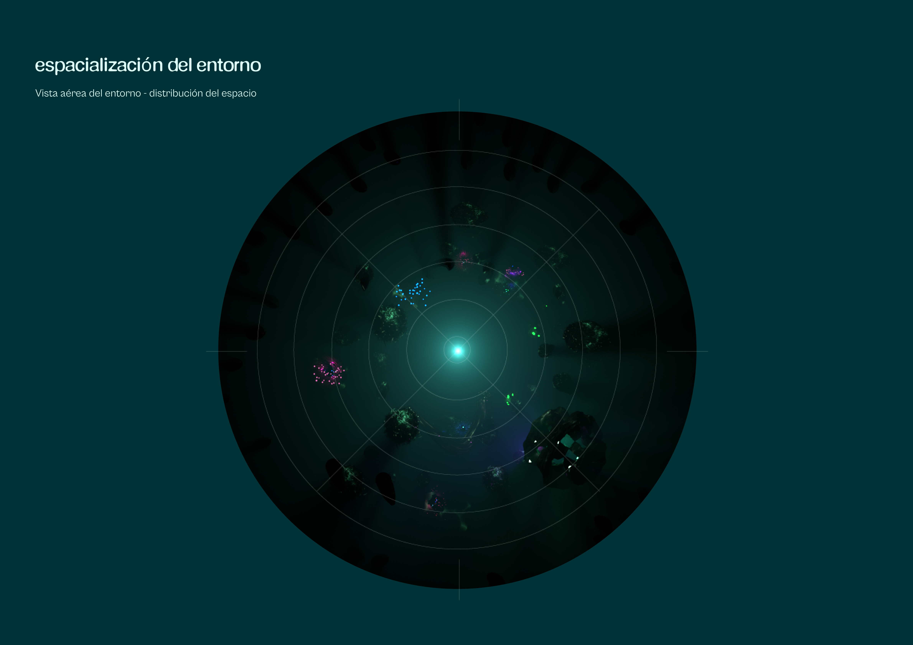
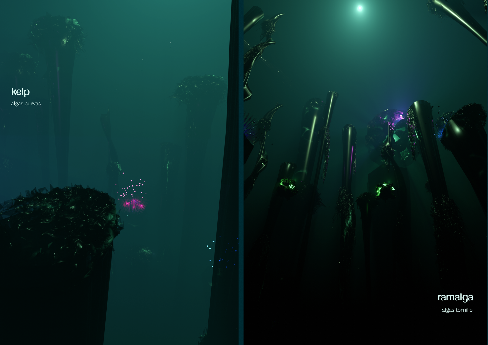
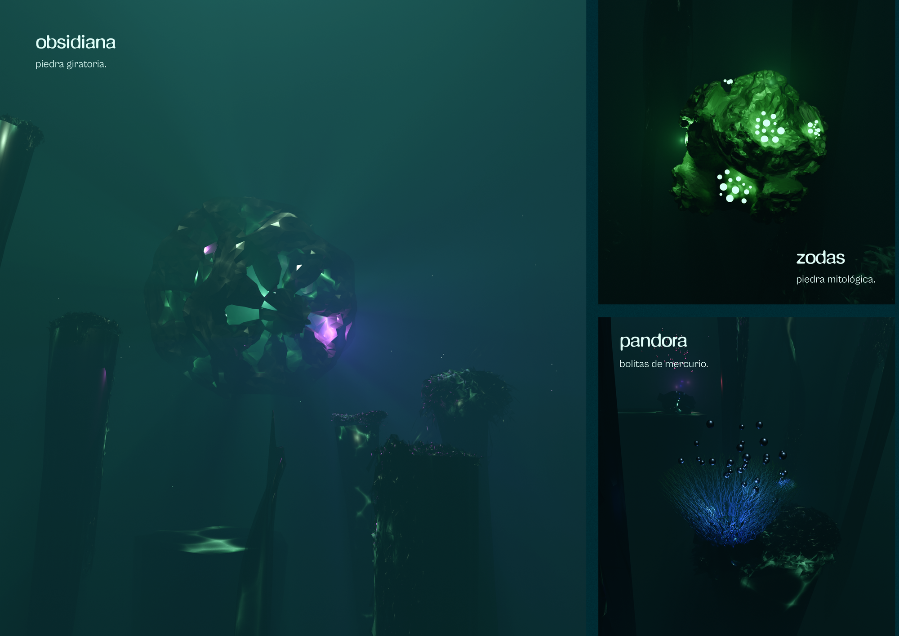
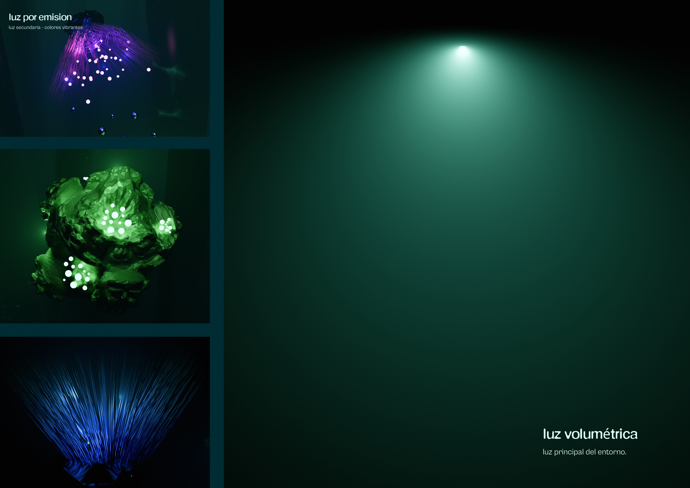
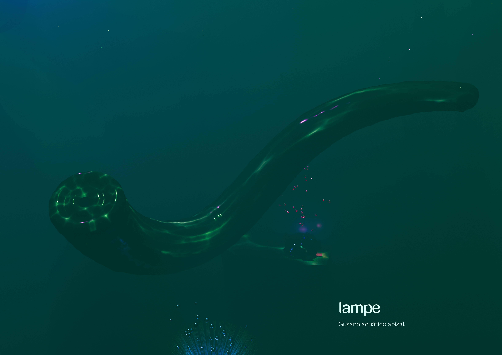

Pedro Benadiba · 2024 · Diseño 3D — Realidad Virtual · Laboratorio de Diseño VI — UTDT
(Abrir Video en YouTube para ver el entorno 360°)
Descripción del Proyecto
El proyecto consistió en construir un entorno de realidad virtual en un mundo 3D. La consigna exigía desarrollar una narrativa propia como base para la construcción de este mundo digital, combinando imagen y audio cuadrafónico para generar una experiencia inmersiva total. El objetivo era aprender a integrar estos dos elementos de manera que se potenciaran mutuamente, logrando que el espectador se sintiera dentro de un entorno coherente y envolvente en 360 grados.
La Idea
Un ambiente desolado y lúgubre en las profundidades del océano, donde los ecos de sonidos distantes chocan con la presencia de figuras exóticas. Sumergido en un abismo angustiante, del que no hay retorno posible a la superficie, se genera una sensación de aturdimiento y desorientación.
Integrantes
Equipo
Propósito
Laboratorio de Diseño VI — Entorno 3D (VR) — UTDT
Herramientas Utilizadas





